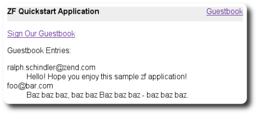

Before we get started, let's consider something: where will these classes live, and how will
we find them? The default project we created instantiates an autoloader. We can attach other
autoloaders to it so that it knows where to find different classes. Typically, we want our
various MVC classes grouped under the same tree -- in this case,
application/ -- and most often using a common prefix.
Zend_Controller_Front has a notion of "modules", which are individual
mini-applications. Modules mimic the directory structure that the zf
tool sets up under application/, and all classes inside them are
assumed to begin with a common prefix, the module name. application/
is itself a module -- the "default" or "application" module. As such, we'll want to setup
autoloading for resources within this directory.
Zend_Application_Module_Autoloader provides the functionality needed
to map the various resources under a module to the appropriate directories, and provides a
standard naming mechanism as well. An instance of the class is created by default during
initialization of the bootstrap object; your application bootstrap will by default use the
module prefix "Application". As such, our models, forms, and table classes will all begin
with the class prefix "Application_".
Now, let's consider what makes up a guestbook. Typically, they are simply a list of entries with a comment, timestamp, and, often, email address. Assuming we store them in a database, we may also want a unique identifier for each entry. We'll likely want to be able to save an entry, fetch individual entries, and retrieve all entries. As such, a simple guestbook model API might look something like this:
// application/models/Guestbook.php
class Application_Model_Guestbook
{
protected $_comment;
protected $_created;
protected $_email;
protected $_id;
public function __set($name, $value);
public function __get($name);
public function setComment($text);
public function getComment();
public function setEmail($email);
public function getEmail();
public function setCreated($ts);
public function getCreated();
public function setId($id);
public function getId();
}
class Application_Model_GuestbookMapper
{
public function save(Application_Model_Guestbook $guestbook);
public function find($id);
public function fetchAll();
}
__get() and __set() will provide a
convenience mechanism for us to access the individual entry properties, and proxy to the
other getters and setters. They also will help ensure that only properties we whitelist will
be available in the object.
find() and fetchAll() provide the ability
to fetch a single entry or all entries, while save() takes care of
saving an entry to the data store.
Now from here, we can start thinking about setting up our database.
First we need to initialize our Db resource. As with the
Layout and View resource, we can provide
configuration for the Db resource. We can do this with the
zf configure db-adapter command:
% zf configure db-adapter \ > 'adapter=PDO_SQLITE&dbname=APPLICATION_PATH "/../data/db/guestbook.db"' \ > production A db configuration for the production has been written to the application config file. % zf configure db-adapter \ > 'adapter=PDO_SQLITE&dbname=APPLICATION_PATH "/../data/db/guestbook-testing.db"' \ > testing A db configuration for the production has been written to the application config file. % zf configure db-adapter \ > 'adapter=PDO_SQLITE&dbname=APPLICATION_PATH "/../data/db/guestbook-dev.db"' \ > development A db configuration for the production has been written to the application config file.
Now edit your application/configs/application.ini file, where you'll
see the following lines were added in the appropriate sections.
; application/configs/application.ini [production] ; ... resources.db.adapter = "PDO_SQLITE" resources.db.params.dbname = APPLICATION_PATH "/../data/db/guestbook.db" [testing : production] ; ... resources.db.adapter = "PDO_SQLITE" resources.db.params.dbname = APPLICATION_PATH "/../data/db/guestbook-testing.db" [development : production] ; ... resources.db.adapter = "PDO_SQLITE" resources.db.params.dbname = APPLICATION_PATH "/../data/db/guestbook-dev.db"
Your final configuration file should look like the following:
; application/configs/application.ini [production] phpSettings.display_startup_errors = 0 phpSettings.display_errors = 0 bootstrap.path = APPLICATION_PATH "/Bootstrap.php" bootstrap.class = "Bootstrap" appnamespace = "Application" resources.frontController.controllerDirectory = APPLICATION_PATH "/controllers" resources.frontController.params.displayExceptions = 0 resources.layout.layoutPath = APPLICATION_PATH "/layouts/scripts" resources.view[] = resources.db.adapter = "PDO_SQLITE" resources.db.params.dbname = APPLICATION_PATH "/../data/db/guestbook.db" [staging : production] [testing : production] phpSettings.display_startup_errors = 1 phpSettings.display_errors = 1 resources.db.adapter = "PDO_SQLITE" resources.db.params.dbname = APPLICATION_PATH "/../data/db/guestbook-testing.db" [development : production] phpSettings.display_startup_errors = 1 phpSettings.display_errors = 1 resources.db.adapter = "PDO_SQLITE" resources.db.params.dbname = APPLICATION_PATH "/../data/db/guestbook-dev.db"
Note that the database(s) will be stored in data/db/. Create those
directories, and make them world-writeable. On unix-like systems, you can do that as
follows:
% mkdir -p data/db; chmod -R a+rwX data
On Windows, you will need to create the directories in Explorer and set the permissions to allow anyone to write to the directory.
At this point we have a connection to a database; in our case, its a connection to a Sqlite
database located inside our application/data/ directory. So, let's
design a simple table that will hold our guestbook entries.
-- scripts/schema.sqlite.sql
--
-- You will need load your database schema with this SQL.
CREATE TABLE guestbook (
id INTEGER NOT NULL PRIMARY KEY AUTOINCREMENT,
email VARCHAR(32) NOT NULL DEFAULT 'noemail@test.com',
comment TEXT NULL,
created DATETIME NOT NULL
);
CREATE INDEX "id" ON "guestbook" ("id");
And, so that we can have some working data out of the box, lets create a few rows of information to make our application interesting.
-- scripts/data.sqlite.sql
--
-- You can begin populating the database with the following SQL statements.
INSERT INTO guestbook (email, comment, created) VALUES
('ralph.schindler@zend.com',
'Hello! Hope you enjoy this sample zf application!',
DATETIME('NOW'));
INSERT INTO guestbook (email, comment, created) VALUES
('foo@bar.com',
'Baz baz baz, baz baz Baz baz baz - baz baz baz.',
DATETIME('NOW'));
Now that we have both the schema and some data defined. Lets get a script together that we
can now execute to build this database. Naturally, this is not needed in production, but
this script will help developers build out the database requirements locally so they can
have the fully working application. Create the script as
scripts/load.sqlite.php with the following contents:
// scripts/load.sqlite.php
/**
* Script for creating and loading database
*/
// Initialize the application path and autoloading
defined('APPLICATION_PATH')
|| define('APPLICATION_PATH', realpath(dirname(__FILE__) . '/../application'));
set_include_path(implode(PATH_SEPARATOR, array(
APPLICATION_PATH . '/../library',
get_include_path(),
)));
require_once 'Zend/Loader/Autoloader.php';
Zend_Loader_Autoloader::getInstance();
// Define some CLI options
$getopt = new Zend_Console_Getopt(array(
'withdata|w' => 'Load database with sample data',
'env|e-s' => 'Application environment for which to create database (defaults to development)',
'help|h' => 'Help -- usage message',
));
try {
$getopt->parse();
} catch (Zend_Console_Getopt_Exception $e) {
// Bad options passed: report usage
echo $e->getUsageMessage();
return false;
}
// If help requested, report usage message
if ($getopt->getOption('h')) {
echo $getopt->getUsageMessage();
return true;
}
// Initialize values based on presence or absence of CLI options
$withData = $getopt->getOption('w');
$env = $getopt->getOption('e');
defined('APPLICATION_ENV')
|| define('APPLICATION_ENV', (null === $env) ? 'development' : $env);
// Initialize Zend_Application
$application = new Zend_Application(
APPLICATION_ENV,
APPLICATION_PATH . '/configs/application.ini'
);
// Initialize and retrieve DB resource
$bootstrap = $application->getBootstrap();
$bootstrap->bootstrap('db');
$dbAdapter = $bootstrap->getResource('db');
// let the user know whats going on (we are actually creating a
// database here)
if ('testing' != APPLICATION_ENV) {
echo 'Writing Database Guestbook in (control-c to cancel): ' . PHP_EOL;
for ($x = 5; $x > 0; $x--) {
echo $x . "\r"; sleep(1);
}
}
// Check to see if we have a database file already
$options = $bootstrap->getOption('resources');
$dbFile = $options['db']['params']['dbname'];
if (file_exists($dbFile)) {
unlink($dbFile);
}
// this block executes the actual statements that were loaded from
// the schema file.
try {
$schemaSql = file_get_contents(dirname(__FILE__) . '/schema.sqlite.sql');
// use the connection directly to load sql in batches
$dbAdapter->getConnection()->exec($schemaSql);
chmod($dbFile, 0666);
if ('testing' != APPLICATION_ENV) {
echo PHP_EOL;
echo 'Database Created';
echo PHP_EOL;
}
if ($withData) {
$dataSql = file_get_contents(dirname(__FILE__) . '/data.sqlite.sql');
// use the connection directly to load sql in batches
$dbAdapter->getConnection()->exec($dataSql);
if ('testing' != APPLICATION_ENV) {
echo 'Data Loaded.';
echo PHP_EOL;
}
}
} catch (Exception $e) {
echo 'AN ERROR HAS OCCURED:' . PHP_EOL;
echo $e->getMessage() . PHP_EOL;
return false;
}
// generally speaking, this script will be run from the command line
return true;
Now, let's execute this script. From a terminal or the DOS command line, do the following:
% php scripts/load.sqlite.php --withdata
You should see output like the following:
path/to/ZendFrameworkQuickstart/scripts$ php load.sqlite.php --withdata Writing Database Guestbook in (control-c to cancel): 1 Database Created Data Loaded.
Now we have a fully working database and table for our guestbook application. Our next few
steps are to build out our application code. This includes building a data source (in our
case, we will use Zend_Db_Table), and a data mapper to connect that
data source to our domain model. Finally we'll also create the controller that will interact
with this model to both display existing entries and process new entries.
We'll use a Table Data
Gateway to connect to our data source; Zend_Db_Table
provides this functionality. To get started, lets create a
Zend_Db_Table-based table class. Just as we've done for layouts and
the database adapter, we can use the zf tool to assist, using the command
create db-table. This takes minimally two arguments, the name by which
you want to refer to the class, and the database table it maps to.
% zf create db-table Guestbook guestbook Creating a DbTable at application/models/DbTable/Guestbook.php Updating project profile 'zfproject.xml'
Looking at your directory tree, you'll now see that a new directory,
application/models/DbTable/, was created, with the file
Guestbook.php. If you open that file, you'll see the following
contents:
// application/models/DbTable/Guestbook.php
/**
* This is the DbTable class for the guestbook table.
*/
class Application_Model_DbTable_Guestbook extends Zend_Db_Table_Abstract
{
/** Table name */
protected $_name = 'guestbook';
}
Note the class prefix: Application_Model_DbTable. The class prefix
for our module, "Application", is the first segment, and then we have the component,
"Model_DbTable"; the latter is mapped to the models/DbTable/ directory
of the module.
All that is truly necessary when extending Zend_Db_Table is to
provide a table name and optionally the primary key (if it is not "id").
Now let's create a Data
Mapper. A Data Mapper maps a domain object to the database.
In our case, it will map our model, Application_Model_Guestbook, to
our data source, Application_Model_DbTable_Guestbook. A typical
API for a data mapper is as follows:
// application/models/GuestbookMapper.php
class Application_Model_GuestbookMapper
{
public function save($model);
public function find($id, $model);
public function fetchAll();
}
In addition to these methods, we'll add methods for setting and retrieving the Table Data Gateway. To create the initial class, use the zf CLI tool:
% zf create model GuestbookMapper Creating a model at application/models/GuestbookMapper.php Updating project profile '.zfproject.xml'
Now, edit the class Application_Model_GuestbookMapper found in
application/models/GuestbookMapper.php to read as follows:
// application/models/GuestbookMapper.php
class Application_Model_GuestbookMapper
{
protected $_dbTable;
public function setDbTable($dbTable)
{
if (is_string($dbTable)) {
$dbTable = new $dbTable();
}
if (!$dbTable instanceof Zend_Db_Table_Abstract) {
throw new Exception('Invalid table data gateway provided');
}
$this->_dbTable = $dbTable;
return $this;
}
public function getDbTable()
{
if (null === $this->_dbTable) {
$this->setDbTable('Application_Model_DbTable_Guestbook');
}
return $this->_dbTable;
}
public function save(Application_Model_Guestbook $guestbook)
{
$data = array(
'email' => $guestbook->getEmail(),
'comment' => $guestbook->getComment(),
'created' => date('Y-m-d H:i:s'),
);
if (null === ($id = $guestbook->getId())) {
unset($data['id']);
$this->getDbTable()->insert($data);
} else {
$this->getDbTable()->update($data, array('id = ?' => $id));
}
}
public function find($id, Application_Model_Guestbook $guestbook)
{
$result = $this->getDbTable()->find($id);
if (0 == count($result)) {
return;
}
$row = $result->current();
$guestbook->setId($row->id)
->setEmail($row->email)
->setComment($row->comment)
->setCreated($row->created);
}
public function fetchAll()
{
$resultSet = $this->getDbTable()->fetchAll();
$entries = array();
foreach ($resultSet as $row) {
$entry = new Application_Model_Guestbook();
$entry->setId($row->id)
->setEmail($row->email)
->setComment($row->comment)
->setCreated($row->created);
$entries[] = $entry;
}
return $entries;
}
}
Now it's time to create our model class. We'll do so, once again, using the zf create model command:
% zf create model Guestbook Creating a model at application/models/Guestbook.php Updating project profile '.zfproject.xml'
We'll modify this empty PHP class to make it easy to populate the model
by passing an array of data either to the constructor or a
setOptions() method. The final model class, located in
application/models/Guestbook.php, should look like this:
// application/models/Guestbook.php
class Application_Model_Guestbook
{
protected $_comment;
protected $_created;
protected $_email;
protected $_id;
public function __construct(array $options = null)
{
if (is_array($options)) {
$this->setOptions($options);
}
}
public function __set($name, $value)
{
$method = 'set' . $name;
if (('mapper' == $name) || !method_exists($this, $method)) {
throw new Exception('Invalid guestbook property');
}
$this->$method($value);
}
public function __get($name)
{
$method = 'get' . $name;
if (('mapper' == $name) || !method_exists($this, $method)) {
throw new Exception('Invalid guestbook property');
}
return $this->$method();
}
public function setOptions(array $options)
{
$methods = get_class_methods($this);
foreach ($options as $key => $value) {
$method = 'set' . ucfirst($key);
if (in_array($method, $methods)) {
$this->$method($value);
}
}
return $this;
}
public function setComment($text)
{
$this->_comment = (string) $text;
return $this;
}
public function getComment()
{
return $this->_comment;
}
public function setEmail($email)
{
$this->_email = (string) $email;
return $this;
}
public function getEmail()
{
return $this->_email;
}
public function setCreated($ts)
{
$this->_created = $ts;
return $this;
}
public function getCreated()
{
return $this->_created;
}
public function setId($id)
{
$this->_id = (int) $id;
return $this;
}
public function getId()
{
return $this->_id;
}
}
Lastly, to connect these elements all together, lets create a guestbook controller that will both list the entries that are currently inside the database.
To create a new controller, use the zf create controller command:
% zf create controller Guestbook
Creating a controller at
application/controllers/GuestbookController.php
Creating an index action method in controller Guestbook
Creating a view script for the index action method at
application/views/scripts/guestbook/index.phtml
Creating a controller test file at
tests/application/controllers/GuestbookControllerTest.php
Updating project profile '.zfproject.xml'
This will create a new controller, GuestbookController, in
application/controllers/GuestbookController.php, with a single action
method, indexAction(). It will also create a view script directory
for the controller, application/views/scripts/guestbook/, with a view
script for the index action.
We'll use the "index" action as a landing page to view all guestbook entries.
Now, let's flesh out the basic application logic. On a hit to
indexAction(), we'll display all guestbook entries. This would look
like the following:
// application/controllers/GuestbookController.php
class GuestbookController extends Zend_Controller_Action
{
public function indexAction()
{
$guestbook = new Application_Model_GuestbookMapper();
$this->view->entries = $guestbook->fetchAll();
}
}
And, of course, we need a view script to go along with that. Edit
application/views/scripts/guestbook/index.phtml to read as follows:
<!-- application/views/scripts/guestbook/index.phtml -->
<p><a href="<?php echo $this->url(
array(
'controller' => 'guestbook',
'action' => 'sign'
),
'default',
true) ?>">Sign Our Guestbook</a></p>
Guestbook Entries: <br />
<dl>
<?php foreach ($this->entries as $entry): ?>
<dt><?php echo $this->escape($entry->email) ?></dt>
<dd><?php echo $this->escape($entry->comment) ?></dd>
<?php endforeach ?>
</dl>
![[Note]](images/note.png) |
Checkpoint |
|---|---|
|
Now browse to "http://localhost/guestbook". You should see the following in your browser:
 |
|
Using the data loader script |
|---|---|
|
The data loader script introduced in this section
(
Usage: load.sqlite.php [ options ]
--withdata|-w Load database with sample data
--env|-e [ ] Application environment for which to create database
(defaults to development)
--help|-h Help -- usage message)]]
The "-e" switch allows you to specify the value to use for the constant
|